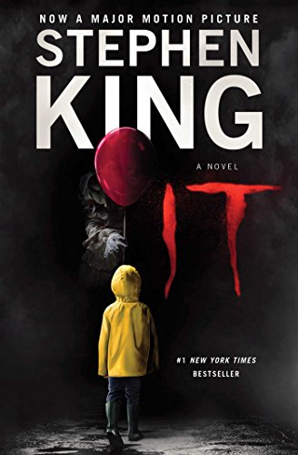

IT
More Information
See this linkPlot:
Stephen King's "IT" is a chilling horror novel set in the town of Derry, Maine. The story alternates between two time periods, the 1950s, and the 1980s, exploring the haunting presence of an ancient evil that lurks beneath the town.
In the 1950s, a group of seven outcast kids, known as "The Losers' Club," come together to face their deepest fears as they confront a malevolent entity that takes the form of their worst nightmares. This shape-shifting entity, often appearing as a terrifying clown named Pennywise, preys on the children of Derry, feeding on their fear.
The Losers' Club manages to thwart the malevolence temporarily but swears to return if it ever resurfaces. They eventually disperse, each trying to forget the horrors they faced.
Decades later, in the 1980s, the evil force awakens once again, and mysterious child disappearances plague Derry. Mike Hanlon, the only member of the original group who remains in town, calls upon his childhood friends, now grown up and leading separate lives, to fulfill their promise to confront IT once more.
As the group reunites, buried memories resurface, and they must confront not only the malevolent entity but also the traumas of their past. The Losers' Club must summon the strength to face their deepest fears and uncover the ancient evil's true form and weaknesses to put an end to its reign of terror.
Stephen King's "IT" delves into themes of friendship, trauma, courage, and the resilience of the human spirit. It is a gripping tale of horror that leaves readers on the edge of their seats as they follow the harrowing journey of The Losers' Club in their battle against a sinister and otherworldly adversary.